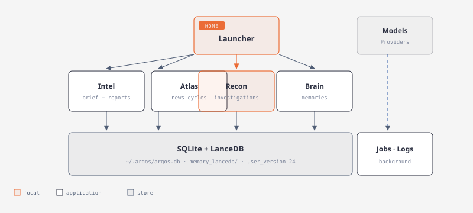
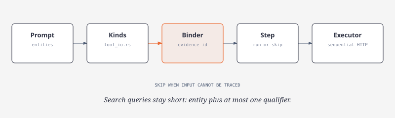
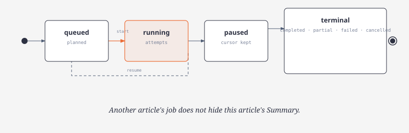
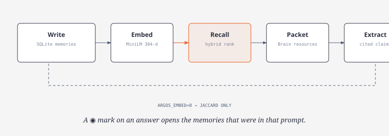
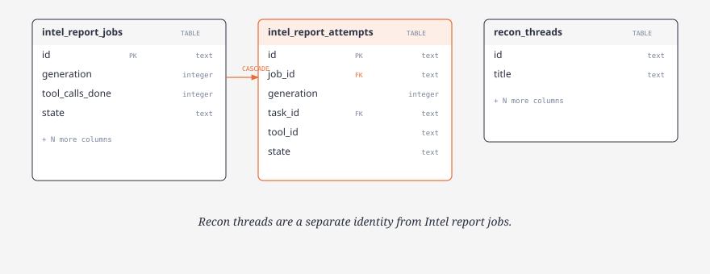
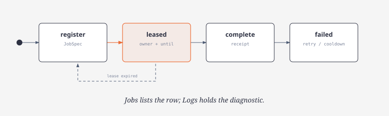
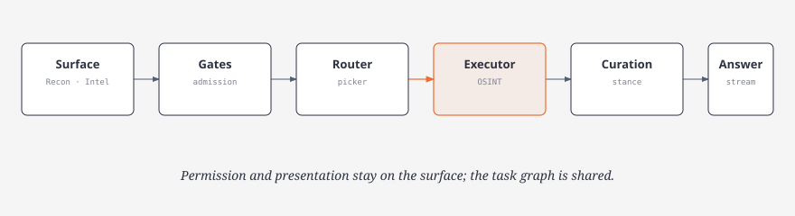

Architecture
Workspace
Home launches four applications that share SQLite and LanceDB.

Every Argos figure, in document order. Click a drawing for the full HTML page (title, type, and SVG).
Home launches four applications that share SQLite and LanceDB.

Chrome wraps the module body; overlays trap Tab and clicks.

Recall, directives, picker, binder, executor, synthesis.

Every input is grounded or the step is skipped.

Jev decisions, chat JSON, or a deterministic fallback.

Firecrawl, SociaVault, and Hunter are primary.

Discovery, heat bands, then regional headlines.

Article to job to attempts to BLUF Summary.

Queued, running, paused, then a terminal state.

SQLite plus optional MiniLM vectors.

auth.json holds keys; config.toml holds roles.

TUI, core, SQLite, LanceDB, secrets.

intel_report_attempts is the dispatch ledger.

Register, lease, complete, or fail.

Shared pipeline under Recon, Home, and Intel.

Query the graph, plan, edit, update.